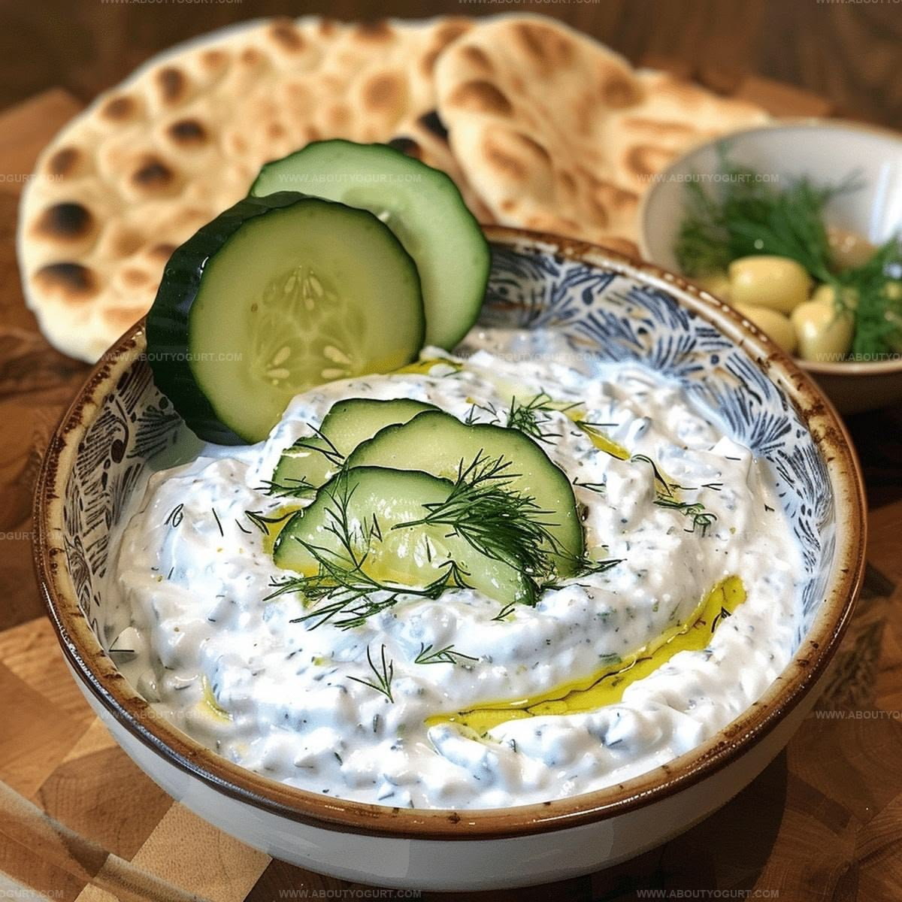

Authentic Greek
Tzatziki Sauce
Master the cool, garlic-infused, extra-creamy Greek cucumber sauce from scratch. Perfect for gyros, grilled meats, crisp veggies, and warm pita bread.

"The secret is in the cucumber drain!" — Chef Omar Rafeek
Watch How It's Made
Follow along with this step-by-step video guide to learn proper cucumber squeezing techniques and ingredient ratios.
4 Golden Secrets to Perfection
Avoid common beginner mistakes like watery or bland sauce with these simple principles.
Thoroughly Drain the Cucumber
Cucumbers are over 95% water. Grate them, salt them, wait 10 minutes, then wring out every single drop using a cheesecloth or clean kitchen towel. Water is the #1 enemy of thick Tzatziki!
Use Authentic Full-Fat Yogurt
Always opt for full-fat (10% or 5%) strained Greek yogurt. If using standard yogurt, let it drain through a coffee filter overnight to achieve the signature creamy consistency.
Finely Grated Fresh Garlic
Never use garlic powder! Microplane or finely grate fresh garlic cloves so they blend smoothly into the yogurt without harsh crunchy bits.
Chilling is Essential
Freshly mixed Tzatziki can taste sharp. Let it rest in the refrigerator for at least 1 hour before serving to let the garlic, dill, and lemon mellow into harmony.
Ingredients Checklist
Check off items as you gather them in your kitchen.
Step-by-Step Instructions
1. Grate the Cucumber
Prep WorkWash 1 large English cucumber thoroughly. You can keep the skin on for extra color and vitamins or peel it if preferred. Using the large holes of a box grater, grate the cucumber into a bowl.
2. Salt & Squeeze (The Secret Step)
Crucial StepToss the grated cucumber with ½ teaspoon of sea salt. Let it rest for 10 minutes to draw out moisture. Afterwards, transfer the cucumber to a clean kitchen towel or cheesecloth and wring out as much liquid as physically possible over the sink!
3. Prep Herbs, Garlic & Acid
Flavor BaseFinely mince or grate 3-4 fresh garlic cloves using a microplane. Finely chop 2 tablespoons of fresh dill (or fresh mint). Squeeze 1 tablespoon of fresh lemon juice and measure out 1 teaspoon of red wine vinegar.
4. Whisk & Combine
AssemblyIn a medium mixing bowl, add 2 cups of thick Greek yogurt, squeezed cucumber, garlic, herbs, lemon juice, red wine vinegar, and 2 tablespoons of extra virgin olive oil. Whisk briskly until completely incorporated and silky smooth. Taste and season with extra salt or black pepper as needed.
5. Chill & Garnish
Final TouchCover the bowl tightly with plastic wrap and chill in the refrigerator for at least 60 minutes. Before serving, drizzle with a swirl of high-quality Extra Virgin Olive Oil and a sprig of fresh dill. Serve cold!
How to Store
- Refrigerator: Store in an airtight container for up to 4 to 5 days.
- Freezing: Do NOT freeze! Dairy and cucumber separate and become grainy upon thawing.
- Refresh Tip: Stir briefly before re-serving if a little olive oil separates on top.
Estimated Nutrition
Per 1/4 cup serving (Based on 8 total servings)
Troubleshooting & FAQ
Everything you need to know for classic Greek gyro perfection.
Contact Me
Have a question, a suggestion, or your own twist on this recipe? Send me an email and I'll get back to you.